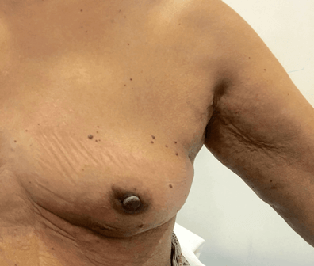

ਛਾਤੀ

ਛਾਤੀ
ਚੂਚੀ

ਮਾਰਟਿਨਾ ਨਵਰਾਟਿਲੋਵਾ, ਨੌਂ ਵਾਰ ਵਿਮਬਲੇਡਨ ਸਿੰਗਲ ਚੈਂਪਿਅਨ ਬਣਨ ਵਾਲੀ ਖੇਡਾਂ ਦੀ ਉਸਤਾਦ ਦਾ ਨਿਦਾਨ ਡਕਟਲ ਕਾਰਸੀਨੋਮਾ ਇਨ ਸਿਟੂ (ਣਙਂਛ) ਦੇ ਨਾਲ ਕੀਤਾ ਗਿਆ ਸੀ, ਜੋ ਛਾਤੀ ਦੇ ਕੈਂਸਰ ਦਾ ਇੱਕ ਸ਼ੁਰੂਆਤੀ ਰੂਪ ਹੈ। ਉਹ 2010 ਵਿੱਚ 53 ਸਾਲ ਦੀ ਸੀ ਅਤੇ ਉਸਨੇ ਚਾਰ ਸਾਲਾਂ ਲਈ ਸਾਲਾਨਾ ਸਕ੍ਰੀਨਿੰਗ ਮੈਮੋਗ੍ਰਾਮ ਨਹੀਂ ਕਰਾਈ ਸੀ। ਭਾਵੇਂ ਕਿ 40 ਸਾਲ ਦੀ ਉਮਰ ਤੋਂ ਸਾਲਾਨਾ ਸਕ੍ਰੀਨਿੰਗ ਮੈਮੋਗ੍ਰਾਮ ਕਰਾਉਣ ਦੀ ਸਿਫਾਰਿਸ਼ ਦਿੱਤੀ ਜਾਂਦੀ ਹੈ, ਉਹ ਮੰਨਦੀ ਹੈ ਕਿ ਜਦੋਂ ਉਸ ਦੀਆਂ ਸਾਲਾਨਾ ਜਾਂਚਾਂ ਦੇ ਨਾਲ ਅਨੁਪਾਲਣ ਕਰਨ ਦੀ ਗੱਲ ਆਈ, ਤਾਂ ਉਸਦੀ ਸਿਹਤਮੰਦ ਜੀਵਨਸ਼ੈਲੀ ਅਤੇ ਸਥਿਤੀ ਨੇ ਕੁਝ ਸੰਤੁਸ਼ਟੀ ਪੈਦਾ ਕੀਤੀ।
ਉਸਨੇ 2010 ਵਿੱਚ ਇੱਕ ਇੰਟਰਵਿਊ ਵਿੱਚ ਕਿਹਾ, "ਮੈਂ ਮੈਮੋਗ੍ਰਾਮ ਵਿੱਚ ਚਾਰ ਸਾਲ ਲੰਘਾਏ। ਹਰ ਕੋਈ ਵਿਅਸਤ ਹੋ ਜਾਂਦਾ ਹੈ, ਪਰ ਬਹਾਨੇ ਨਾ ਬਣਾਓ। ਮੇਰਾ ਆਕਾਰ ਠੀਕ ਰਿਹਾ ਅਤੇ ਮੈਂ ਸਹੀ ਭੋਜਨ ਖਾਦਾ, ਅਤੇ ਇਹ ਮੇਰੇ ਨਾਲ ਵਾਪਰ ਗਿਆ। ਇੱਕ ਹੋਰ ਸਾਲ ਅਤੇ ਮੈਂ ਕਿਸੇ ਵੱਡੀ ਮੁਸੀਬਤ ਵਿੱਚ ਫੱਸ ਸਕਦਾ ਸੀ।" ਖੁਸ਼ਕਿਸਮਤੀ ਨਾਲ, ਕੈਂਸਰ ਦਾ ਨਿਦਾਨ ਇਸ ਦੀ ਸ਼ੁਰੂਆਤੀ ਸਟੇਜ 'ਤੇ ਕੀਤਾ ਗਿਆ ਸੀ। ਉਸਨੇ ਵਿਆਪਕ ਸਥਾਨਕ ਚੀਰਾ (ਲੰਪੇਕਟੋਮੀ )ਲਗਵਾਇਆ ਅਤੇ ਮਈ 2010 ਵਿੱਚ ਵਿਕਿਰਨ ਥੈਰੇਪੀ ਪੂਰੀ ਕੀਤੀ। .
ਸ਼ੈਰਿਲ ਕ੍ਰੋਈ, ਇੱਕ ਮਸ਼ਹੂਰ ਗਾਇਕ ਅਤੇ ਨੌਂ ਵਾਰ ਗ੍ਰੈਮੀ ਇਨਾਮ ਦੇ ਜੇਤੂ ਅਤੇ ਕ੍ਰਿਸਟੀਨ ਐਪਲੀਗੇਟ, ਇੱਕ ਹੋਰ ਮਸ਼ਹੂਰ ਹੋਲੀਵੁੱਡ ਐਕਟਰ ਦਾ ਨਿਦਾਨ ਸਕ੍ਰੀਨਿੰਗ ਮੈਮੋਗ੍ਰਾਮ ਕਾਰਨ ਛਾਤੀ ਦੇ ਸ਼ੁਰੂਆਤੀ ਅਸਪਸ਼ਟ ਕੈਂਸਰ ਦੇ ਨਾਲ ਨਿਦਾਨ ਕੀਤਾ ਗਿਆ ਹੈ।
DCIS ਕੀ ਹੈ
ਛਾਤੀ ਦੀਆਂ ਡਕਟਸ, ਲੋਬਿਉਲਸ ਅਤੇ ਚਰਬੀਲੇ ਟਿਸ਼ੂ ਦੀ ਬਣੀ ਹੁੰਦੀ ਹੈ। ਡਕਟਲ ਕਾਰਸੀਨੋਮਾ ਇਨ ਸਿਟੂ ਛਾਤੀ ਦੇ ਕੈਂਸਰ ਦੀ ਇੱਕ ਸ਼ੁਰੂਆਤੀ ਕਿਸਮ ਹੈ, ਜਿੱਥੇ ਕੈਂਸਰ ਦੇ ਸੈੱਲ ਡਕਟ (ਜੋ ਚੂਚੀ ਤੱਕ ਦੁੱਧ ਲੈ ਜਾਂਦੇ ਹਨ) ਦੇ ਅੰਦਰ ਹੁੰਦੇ ਹਨ। ਇਹ ਕੈਂਸਰ ਤੋਂ ਪਹਿਲਾਂ ਹੋਣ ਵਾਲੀ ਇੱਕ ਹਾਲਤ ਹੈ, ਜਿੱਥੇ ਕੈਂਸਰ ਦੇ ਸੈੱਲਾਂ ਨੇ ਛਾਤੀ ਦੇ ਆਲੇ-ਦੁਆਲੇ ਦੇ ਸਾਧਾਰਨ ਟਿਸ਼ੂ ਵਿੱਚ ਦੁੱਧ ਦੀਆਂ ਨਾਲੀਆਂ ਤੋਂ ਪਰੇ ਫੈਲਣ ਦੀ ਯੋਗਤਾ ਵਿਕਸਿਤ ਨਹੀਂ ਕੀਤੀ ਹੈ
DCIS ਕਿੰਨਾ ਆਮ ਹੈ
ਅਮੇਰਿਕਨ ਕੈਂਸਰ ਸੋਸਾਇਟੀ ਦੇ ਮੁਤਾਬਕ, ਹਰ ਸਾਲ ਯੂਨਾਈਟਿਡ ਸਟੇਟਸ ਵਿੱਚ DCIS ਦੇ ਲਗਭਗ 60,000 ਮਾਮਲਿਆਂ ਦਾ ਨਿਦਾਨ ਕੀਤਾ ਜਾਂਦਾ ਹੈ (ਹਰ ਸਾਲ ਨਿਦਾਨ ਕੀਤੇ ਛਾਤੀ ਦੇ ਕੈਂਸਰ ਦੇ 5 ਨਵੇਂ ਮਾਮਲਿਆਂ ਵਿੱਚੋਂ 1 ਦੇ ਹਿਸਾਬ ਨਾਲ)। ਭਾਰਤ ਵਿੱਚ, ਇੰਡੀਅਨ ਕਾਉਂਸਿਲ ਔਫ ਮੈਡੀਕਲ ਰਿਸਰਚ (ICMR) ਦੇ ਮੁਤਾਬਕ, ਹਰ ਸਾਲ ਛਾਤੀ ਦੇ ਕੈਂਸਰ ਦੇ ਲਗਭਗ 150,000 ਨਵੇਂ ਮਾਮਲਿਆਂ ਦਾ ਨਿਦਾਨ ਕੀਤਾ ਜਾਂਦਾ ਹੈ। ਪਰ, ਣਙਂਛ DSCIS ਦੇ ਵਾਪਰਨ ਉੱਤੇ ਕੋਈ ਸਟੀਕ ਅੰਕੜੇ ਉਪਲਬਧ ਨਹੀਂ ਹਨ। ਜਾਗਰੁਕਤਾ ਦੀ ਕਮੀ ਅਤੇ ਵਿਵਸਥਿਤ ਸਕ੍ਰੀਨਿੰਗ ਪ੍ਰੋਗਰਾਮ ਦੀ ਅਣਹੋਂਦ ਕਰਕੇ, ਸਾਡੇ ਦੇਸ਼ ਵਿੱਚ 60% ਤੋਂ ਵੱਧ ਛਾਤੀ ਦੇ ਕੈਂਸਰ ਉੱਨਤ ਸਟੇਜ ਵਿੱਚ ਮੌਜੂਦ ਹੁੰਦੇ ਹਨ, ਜੋ ਨਿਦਾਨ ਕੀਤੇ ਜਾਣ ਦੇ ਇੱਕ ਸਾਲ ਅੰਦਰ ਜਿਆਦਾਤਰ ਘਾਤਕ ਹੁੰਦੇ ਹਨ। ਹਰ ਦੱਸ ਮਿੰਟਾਂ ਵਿੱਚ, ਭਾਰਤ ਵਿੱਚ ਇੱਕ ਔਰਤ ਛਾਤੀ ਦੇ ਕੈਂਸਰ ਸਾਮ੍ਹਣੇ ਘੁਟਨੇ ਟੇਕ ਦਿੰਦੀ ਹੈ
DCIS ਕਿਵੇਂ ਮੌਜੂਦ ਹੁੰਦਾ ਹੈ
ਆਮ ਤੌਰ ਤੇ DCIS ਕੋਈ ਲੱਛਣ ਪੇਸ਼ ਨਹੀਂ ਕਰਦਾ। DCIS (80% ਤੋਂ ਵੱਧ) ਦੇ ਵੱਡੀ ਮਾਤਰਾ ਦਾ ਪਤਾ ਸਕ੍ਰੀਨਿੰਗ ਮੈਮੋਗ੍ਰਾਫੀ ਉੱਤੇ ਲਗਾਇਆ ਜਾਂਦਾ ਹੈ। DCIS ਚੂਚੀ ਤੋਂ ਖੂਨ ਦੇ ਦਾਗਦਾਰ ਰਿਸਾਵ, ਚੂਚੀ ਦੇ ਆਲੇ-ਦੁਆਲੇ ਧੱਫੜ ਦੇ ਨਾਲ ਮੌਜੂਦ ਹੋ ਸਕਦਾ ਹੈ (ਪੈਗੇਟਾ' ਰੋਗ ਵਜੋਂ ਹਵਾਲਾ ਦਿੱਤਾ ਜਾਂਦਾ ਹੈ), ਜਾਂ ਬਹੁਤ ਦੁਰਲੱਭ ਤੌਰ 'ਤੇ, ਛਾਤੀ ਵਿੱਚ ਇੱਕ ਗੰਢ ਦੇ ਨਾਲ ਮੌਜੂਦ ਹੋ ਸਕਦਾ ਹੈ। .
DCIS ਦਾ ਨਿਦਾਨ ਕਿਵੇਂ ਕੀਤਾ ਜਾਂਦਾ ਹੈ
DCIS ਦਾ ਪਤਾ ਨੇਮਤ ਬ੍ਰੈਸਟ ਸਕ੍ਰੀਨਿੰਗ ਆਕਲਨ ਦੇ ਨਾਲ ਲਗਾਇਆ ਜਾਂਦਾ ਹੈ। ਆਕਲਨ ਵਿੱਚ ਕਿਸੇ ਸਪੈਸ਼ਲਿਸਟ ਦੁਆਰਾ ਛਾਤੀ ਦਾ ਨੈਦਾਨਿਕ ਮੁਆਇਨਾ, ਛਾਤੀ ਦੇ ਚਿੱਤਰ ਲੈਣਾ (ਦੋਹਾਂ ਛਾਤੀਆਂ ਦਾ ਮੈਮੋਗ੍ਰਾਮ ਅਤੇ ਛਾਤੀਆਂ ਦਾ ਅਲਟ੍ਰਾਸਾਊਂਡ) ਅਤੇ ਇੱਕ ਨੀਡਲ ਕੋਰ ਬਾਯੋਪਸੀ (ਟ੍ਰਿਪਲ ਅਸੈਸਮੈਂਟ) ਸ਼ਾਮਲ ਹੁੰਦੇ ਹਨ।

ਕਿਉਂਕਿ DCIS ਦੇ ਨਾਲ ਬਹੁਤ ਦੁਰਲੱਭ ਹੀ ਗੰਢ ਹੁੰਦੀ ਹੈ, ਛਾਤੀ ਦਾ ਨੈਦਾਨਿਕ ਮੁਆਇਨਾ ਅਕਸਰ ਸਹਾਇਕ ਨਹੀਂ ਹੁੰਦਾ। ਛਾਤੀ ਦੀ ਸਕ੍ਰੀਨਿੰਗ ਲਈ ਗੋਲਡ ਸਟੈਂਡਰਡ, ਮੈਮੋਗ੍ਰਾਮ, ਅਕਸਰ ਅਸਾਧਾਰਨ ਤੌਰ 'ਤੇ ਦਿਖਾਈ ਦੇਣ ਵਾਲੇ (ਪਲੀਓਮੋਰਫਿਕ) ਮੈਕਰੋਕੈਲਸੀਫਿਕੇਸ਼ਨ, ਯਾਂਨੀ, ਕੈਲਸ਼ਿਅਮ ਦੇ ਛੋਟੇ ਦਾਗ, ਦਾ ਇੱਕ ਸਮੂਹ ਦਿਖਾਉਂਦਾ ਹੈ, ਜੋ ਮੈਮੋਗ੍ਰਾਮ ਉੱਤੇ ਕੈਲਸ਼ਿਅਮ ਦੇ ਚਿੱਟੇ ਬਿੰਦੂਆਂ ਵਜੋਂ ਨਜ਼ਰ ਆਉਂਦਾ ਹੈ। ਪਰ, ਇਹ ਯਾਦ ਰੱਖਣਾ ਲਾਜ਼ਮੀ ਹੈ ਕਿ ਸਾਰੇ ਮੈਕਰੋਕੈਲਸੀਫਿਕੇਸ਼ਨ ਕੈਂਸਰ ਵਾਲੇ ਨਹੀਂ ਹੁੰਦੇ ਹਨ। ਕਿਸੇ ਮਲਟੀਡਿਸੀਪਲਿਨਰੀ ਟੀਮ ਕੋਲ DCIS ਨੂੰ ਪਛਾਣਨ ਲਈ ਲੋੜੀਂਦਾ ਗੁਣ ਅਤੇ ਉੱਦਮ ਹੋਣਾ ਚਾਹੀਦਾ ਹੈ।

ਅੰਤ 'ਤੇ, ਕੋਈ ਨਿਦਾਨ ਕਰਨ ਲਈ, ਕੋਰ ਨੀਡਲ ਬਾਯੋਪਸੀ ਕਰਕੇ ਟਿਸ਼ੂ ਦਾ ਇੱਕ ਹਿੱਸਾ ਕੱਢਿਆ ਜਾਂਦਾ ਹੈ, ਜਿਸ ਨੂੰ ਸਥਾਨਕ ਐਨੇਸਥੇਸੀਆ ਦੇ ਅਸਰ ਹੇਠਾਂ ਸਟੀਰੀਓਟੈਕਟਿਕ ਨਿਰਦੇਸ਼ਨ (ਮੈਮੋਗ੍ਰਾਮ ਦੀ ਮਦਦ ਨਾਲ) ਦੇ ਤਹਿਤ ਕੀਤਾ ਜਾਂਦਾ ਹੈ। ਇੱਕ ਹੋਰ ਕਿਸਮ ਦੀ ਨੀਡਲ ਬਾਯੋਪਸੀ, ਫਾਈਨ ਨੀਡਲ ਐਸਪੀਰੇਸ਼ਨ ਬਾਯੋਪਸੀ (FNAC), ਜੋ ਆਮ ਤੌਰ 'ਤੇ ਕੈਂਸਰ ਦੀਆਂ ਸਪਸ਼ਟ ਗੰਢਾਂ ਲਈ ਵਰਤੀ ਜਾਂਦੀ ਹੈ, ਗ਼ਲਤ ਰਾਹੇ ਪਾ ਸਕਦੀ ਹੈ ਅਤੇ DCIS ਤੋਂ ਇਨਵੇਸਿਵ ਕੈਂਸਰ (ਅਜਿਹਾ ਕੈਂਸਰ ਜੋ ਛਾਤੀ ਦੇ ਟਿਸ਼ੂ ਵਿੱਚ ਫੈਲ ਗਿਆ ਹੈ) ਦੀ ਪਛਾਣ ਨਹੀਂ ਕਰੇਗੀ। ਹੁਣ ਤੱਕ ਨੀਡਲ ਕੋਰ ਬਾਯੋਪਸੀ ਬਹੁਤ ਸਟੀਕ ਰਹੀ ਹੈ

ਕੁਝ ਮੌਕਿਆਂ ਤੇ, ਨਿਦਾਨ ਪ੍ਰਾਪਤ ਕਰਨ ਲਈ ਮਾਈਕਰੋਕੈਲਸੀਫਿਕੇਸ਼ਨ ਦੀ ਥਾਂ ਦਾ ਪਤਾ ਲਗਾਉਣ ਵਾਸਤੇ ਪਤਲੀ ਗਾਈਡ ਤਾਰ ਨੂੰ ਵਰਤਦਿਆਂ ਸਾਧਾਰਨ ਐਨੇਸਥੇਸੀਆ ਦੇ ਅਸਰ ਹੇਠਾਂ ਚੀਰੇ ਵਾਲੀ ਬਾਯੋਪਸੀ ਜ਼ਰੂਰੀ ਹੋ ਸਕਦੀ ਹੈ, ਜਦੋਂ ਨੀਡਲ ਕੋਰ ਬਾਯੋਪਸੀ ਦੇ ਨਾਲ ਨਿਦਾਨ ਪ੍ਰਾਪਤ ਕਰਨ ਲਈ ਮਾਈਕਰੋਕੈਲਸੀਫਿਕੇਸ਼ਨ ਦਾ ਝੁੰਡ ਬਹੁਤ ਛੋਟਾ ਹੁੰਦਾ ਹੈ ਅਤੇ ਇਹਨਾਂ ਦੀ ਸੰਖਿਆ ਬਹੁਤ ਘੱਟ ਹੁੰਦੀ ਹੈ
DCIS ਨੂੰ ਦਰਜਾ ਕਿਵੇਂ ਦਿੱਤਾ ਜਾਂਦਾ ਹੈ ਅਤੇ ਇਸਦਾ ਕੀ ਮਹੱਤਵ ਹੈ
DCIS ਨੂੰ ਖੁਰਦਬੀਨ ਹੇਠਾਂ ਸੈੱਲਾਂ ਦੇ ਵਿਖਾਲੇ ਅਤੇ ਇਹ ਸੈੱਲ ਕਿੰਨੀ ਛੇਤੀ ਵੰਡੇ ਜਾਂਦੇ ਹਨ, ਇਸ ਉੱਤੇ ਨਿਰਭਰ ਕਰਕੇ ਦਰਜਾ ਦਿੱਤਾ ਜਾਂਦਾ ਹੈ। ਇਸ ਨੂੰ ਉੱਚ-, ਦਰਮਿਆਨਾ ਗਰੇਡ ਅਤੇ ਨਿਮਨ ਗਰੇਡ ਦੇ DCIS ਵਜੋਂ ਦਰਜਾ ਦਿੱਤਾ ਜਾ ਸਕਦਾ ਹੈ। ਜੇ DCIS ਨੂੰ ਇਲਾਜ ਦੇ ਬਿਨਾਂ ਛੱਡ ਦਿੱਤਾ ਜਾਵੇ, ਤਾਂ ਕੈਂਸਰ ਦੇ ਸੈੱਲ ਅੰਤ ਤੇ ਡਕਟਾਂ ਤੋਂ ਛਾਤੀ ਦੇ ਆਲੇ-ਦੁਆਲੇ ਦੇ ਟਿਸ਼ੂਆਂ ਤੱਕ ਫੈਲਣ ਦੀ ਯੋਗਤਾ ਵਿਕਸਿਤ ਕਰ ਸਕਦੇ ਹਨ। ਇਸ ਨੂੰ ਇਨਵੇਸਿਵ ਬ੍ਰੈਸਟ ਕੈਂਸਰ ਵਜੋਂ ਜਾਣਿਆ ਜਾਂਦਾ ਹੈ। ਉੱਚ-ਗਰੇਡ ਦੇ DCIS ਨਾਲੋਂ ਨਿਮਨ ਗਰੇਡ ਵਾਲੇ DCIS ਲਈ ਇੱਕ ਇਨਵੇਸਿਵ ਕੈਂਸਰ ਬਣਨ ਦੀ ਘੱਟ ਸੰਭਾਵਨਾ ਹੁੰਦੀ ਹੈ।.
DCIS ਦਾ ਇਲਾਜ ਕਿਵੇਂ ਕੀਤਾ ਜਾਂਦਾ ਹੈ?
ਇਲਾਜ ਦਾ ਉਦੇਸ਼ ਇਨਵੇਸਿਵ ਬ੍ਰੈਸਟ ਕੈਂਸਰ ਦੇ ਵਿਕਾਸ ਨੂੰ ਰੋਕਣ ਲਈ ਛਾਤੀ ਦੇ ਅੰਦਰ ਸਾਰੇ DCIS ਨੂੰ ਹਟਾਉਣਾ ਹੈ। ਇਲਾਜ ਕਈ ਕਾਰਕਾਂ ਜਿਵੇਂ ਕਿ ਡਕਟਾਂ ਦੇ ਅੰਦਰ DCIS ਦੇ ਦਾਇਰੇ ਅਤੇ ਣਙਂਛ ਦੇ ਗਰੇਡ ਉੱਤੇ ਨਿਰਭਰ ਕਰਦਾ ਹੈ।
ਸਰਜਰੀ 1H ਬ੍ਰੈਸਟ ਕੰਜ਼ਰਵਿੰਗ ਸਰਜਰੀਛਾਤੀ ਦੀ ਸਰਜਰੀ DCIS ਲਈ ਪਹਿਲੀ ਲਾਈਨ ਦਾ ਇਲਾਜ ਹੈ। ਜੇ DCIS ਕਿਸੇ ਥਾਂ ਤੇ ਹੈ ਅਤੇ ਛਾਤੀ ਦੀ ਕਿਸੇ ਥਾਂ ਤੱਕ ਸੀਮਿਤ ਹੈ, ਤਾਂ ਬ੍ਰੈਸਟ ਕੰਜ਼ਰਵੇਸ਼ਨ ਸਰਜਰੀ ਪੂਰੀ ਕੀਤੀ ਜਾ ਸਕਦੀ ਹੈ। ਕਿਉਂਕਿ ਕੈਂਸਰ ਨਾ ਹੀ ਮਰੀਜ਼, ਨਾ ਹੀ ਡਾਕਟਰ ਦੁਆਰਾ ਮਹਿਸੂਸ ਕੀਤਾ ਜਾ ਸਕਦਾ ਹੈ, ਛਾਤੀ ਦੇ ਅਸਾਧਾਰਨ ਖੇਤਰ ਨੂੰ ਉਜਾਗਰ ਕਰਨ ਲਈ ਛਾਤੀ ਦੇ ਅੰਦਰ ਸਥਾਨਕ ਐਨੇਸਥੇਸੀਆ ਦੇ ਅਸਰ ਹੇਠਾਂ ਇੱਕ ਬਾਰੀਕ ਗਾਈਡ ਵਾਯਰ ਪਾਈ ਜਾਂਦੀ ਹੈ। ਇਹ ਗਾਈਡ ਵਜੋਂ ਕੰਮ ਕਰਦੀ ਹੈ ਅਤੇ ਫੇਰ, ਸਰਜਨ ਛਾਤੀ ਦੇ ਆਲੇ-ਦੁਆਲੇ ਦੇ ਸਾਧਾਰਨ ਟਿਸ਼ੂ (ਗਾਈਡ ਤਾਰ ਦੀ ਮਦਦ ਨਾਲ ਕੀਤਾ ਸਥਾਨਕ ਚੌੜਾ ਚੀਰਾ) ਦੇ ਨਾਲ DCIS ਦੇ ਖੇਤਰ ਨੂੰ ਹਟਾਉਣ ਯੋਗ ਹੁੰਦਾ ਹੈ
ਬ੍ਰੈਸਟ ਕੰਜ਼ਰਵਿੰਗ ਸਰਜਰੀ -
ਚੌੜਾ ਸਥਾਨਕ ਚੀਰਾ



ਮੈਸੇਕਟੋਮੀ ਆਪਣੀ ਪਸੰਦ ਨਾਲ ਕਰਾਇਆ ਗਿਆ ਇੱਕ ਸਰਜੀਕਲ ਇਲਾਜ ਹੈ, ਜੇ DCIS ਛਾਤੀ ਦੇ ਵੱਡੇ ਹਿੱਸੇ ਨੂੰ ਪ੍ਰਭਾਵਿਤ ਕਰਦਾ ਹੈ; ਜਾਂ ਜੇ ਬ੍ਰੈਸਟ ਕੰਜ਼ਰਵਿੰਗ ਸਰਜਰੀ ਨੂੰ ਵਰਤ ਕੇ DCIS ਦੇ ਆਲੇ-ਦੁਆਲੇ ਸਾਧਾਰਨ ਟਿਸ਼ੂ ਦੀ ਸਪਸ਼ਟ ਥਾਂ ਨੂੰ ਪ੍ਰਾਪਤ ਕਰਨਾ ਸੰਭਵ ਨਹੀਂ ਹੋਇਆ ਹੈ; ਜਾਂ ਛਾਤੀ ਵਿੱਚ DCIS ਦੇ ਇੱਕ ਤੋਂ ਵੱਧ ਖੇਤਰ ਹਨ (ਮਲਟੀਫੋਕਲ DCIS)। ਜੇ ਮੈਸੇਕਟੋਮੀ ਦੀ ਸਿਫਾਰਿਸ਼ ਦਿੱਤੀ ਜਾਂਦੀ ਹੈ, ਤਾਂ ਮਰੀਜ਼ ਨੂੰ ਪ੍ਰਮੁੱਖ ਸਰਜਰੀ ਦੇ ਸਮਾਨ ਸਮੇਂ ਤੇ ਤੁਰੰਤ ਬ੍ਰੈਸਟ ਰੀਕੰਸਟ੍ਰੱਕਸ਼ਨ ਕਰਾਉਣ ਦਾ ਵਿਕਲਪ ਦਿੱਤਾ ਜਾਣਾ ਚਾਹੀਦਾ ਹੈ, ਤਾਂ ਜੋ ਛਾਤੀ ਨੂੰ ਹਟਾਉਣ ਨਾਲ ਸਬੰਧਤ ਮਾਨਸਿਕ ਅਤੇ ਭਾਵਨਾਤਮਕ ਜ਼ਖਮ ਨੂੰ ਘੱਟੋ-ਘੱਟ ਕੀਤਾ ਜਾ ਸਕੇ।
ਛਾਤੀ ਨੂੰ ਕਢਵਾਉਣਾ -
ਮੈਸਟੇਕਟੋਮੀ

ਇਹਨਾਂ ਵਲੋਂ ਪੇਸ਼ ਕੀਤਾ ਗਿਆ: ਬ੍ਰੈਸਟ ਕੈਂਸਰ ਕੇਯਰ, ਯੂਕੇ


ਸਰਜਰੀ ਤੋਂ ਬਾਅਦ ਹੋਰ ਇਲਾਜ ਦੀ ਲੋੜ ਹੁੰਦੀ ਹੈ। ਇਸ ਨੂੰ ਸਹਾਇਕ ਥੈਰੇਪੀ ਵਜੋਂ ਹਵਾਲਾ ਦਿੱਤਾ ਜਾਂਦਾ ਹੈ ਅਤੇ ਇਸ ਵਿੱਚ ਰੇਡੀਓਥੈਰੇਪੀ ਅਤੇ ਹਾਰਮੋਨ ਥੈਰੇਪੀ ਸ਼ਾਮਲ ਹੈ
ਰੇਡੀਓਥੈਰੇਪੀਜੇ ਬ੍ਰੈਸਟ ਕੰਜ਼ਰਵੇਸ਼ਨ ਸਰਜਰੀ ਪੂਰੀ ਕੀਤੀ ਗਈ ਹੈ ਤਾਂ ਮਿਆਰੀ ਸਹਾਇਕ ਇਲਾਜ ਔਪਰੇਸ਼ਨ ਕੀਤੀ ਛਾਤੀ ਲਈ ਬਾਹਰੀ ਬੀਮ ਰੇਡੀਓਥੈਰੇਪੀ ਦੇ ਛੇ ਹਫਤਿਆਂ ਤੇ ਹੋਵੇਗਾ। ਜੇ ਮਰੀਜ਼ ਨੇ ਮੈਸਟੇਕਟੋਮੀ ਕਰਾਈ ਸੀ, ਤਾਂ ਰੇਡੀਓਥੈਰੇਪੀ ਦੀ ਲੋੜ ਨਹੀਂ ਹੁੰਦੀ ਹੈ।
ਹਾਰਮੋਨ ਥੈਰੇਪੀਜੇ ਦੀ ਕਿਸਮ ਓਏਸਟ੍ਰੋਜੇਨ ਹਾਰਮੋਨ ਦੇ ਵਿਕਸਿਤ (ਓਏਸਟ੍ਰੋਜੇਨ ਰੀਸੈਪਟਰ ਪਾਜੇਟਿਵ) ਹੋਣ ਉੱਤੇ ਨਿਰਭਰ ਕਰਦੀ ਹੈ, ਤਾਂ ਟੋਮੋਕਸੀਫੇਨ ਦੇ ਰੂਪ ਵਿੱਚ ਹਾਰਮੋਨ ਥੈਰੇਪੀ ਪੇਸ਼ ਕੀਤੀ ਜਾ ਸਕਦੀ ਹੈ। ਇਸ ਹੋਰ ਕਾਰਕਾਂ ਉੱਤੇ ਵੀ ਨਿਰਭਰ ਕਰੇਗੀ, ਜਿਵੇਂ ਕਿ DCIS ਦਾ ਗਰੇਡ।
ਕੀਮੋਥੈਰੇਪੀDCIS ਦੇ ਇਲਾਜ ਲਈ ਕੀਮੋਥੈਰੇਪੀ ਦੀ ਲੋੜ ਨਹੀਂ ਹੁੰਦੀ
ਕੀ DCIS ਜੀਵਨ ਲਈ ਖ਼ਤਰਨਾਕ ਹੈ ਅਤੇ DCIS ਤੋਂ ਕਿਹੜਾ ਪੂਰਵ ਲੱਛਣ ਹੁੰਦਾ ਹੈ?
ਨਹੀਂ। ਕਿਉਂਕਿ ਕੈਂਸਰ ਛਾਤੀ ਦੇ ਆਲੇ-ਦੁਆਲੇ ਦੇ ਸਾਧਾਰਨ ਟਿਸ਼ੂ ਵਿੱਚਲੀਆਂ ਦੁੱਧ ਦੀਆਂ ਨਵਿਕਾਵਾਂ ਤੋਂ ਪਰੇ ਨਹੀਂ ਫੈਲਿਆ ਹੈ, ਇਸਲਈ ਣਙਂਛ ਜੀਵਨ ਲਈ ਖ਼ਤਰਨਾਕ ਨਹੀਂ ਹੈ। ਣਙਂਛ ਵਾਲੀਆਂ ਔਰਤਾਂ ਲਈ ਲੰਮੇ ਸਮੇਂ ਦੀ ਬਚਾਅ ਦਰ ਸ਼ਾਨਦਾਰ, ਯਾਂਨੀ 100 ਪ੍ਰਤੀਸ਼ਤ (98-99%) ਦੇ ਕੋਲ ਹੈ। .